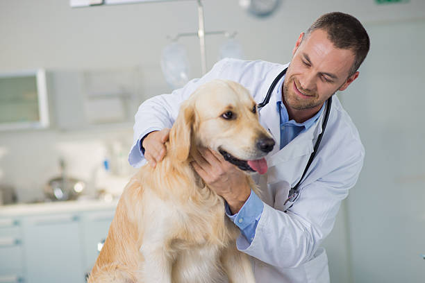
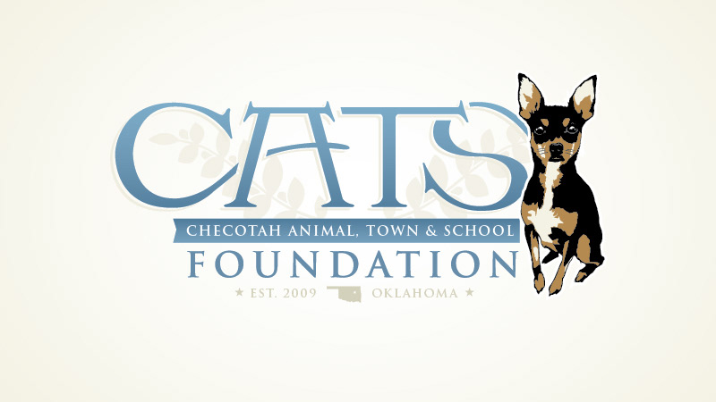
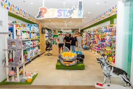
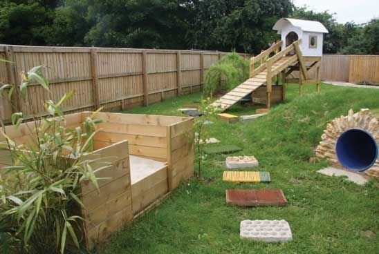

About Happy Paws
Welcome to Happy Paws, a non-profit organization dedicated to rescuing and rehoming abandoned and abused animals. Our mission is to provide a safe haven for animals in need and to promote responsible pet ownership.
Our Story
Founded in 2014, Happy Paws started as a small group of volunteers passionate about animal welfare. Over the years, we have grown into a recognized shelter, saving hundreds of animals and finding them loving homes.
// Team SectionMeet Our Team
Our Team
Our team is made up of dedicated staff and volunteers who work tirelessly to care for our animals and support our mission. We believe in the power of community and welcome anyone who wants to help.
Jane Doe
Shelter Manager

John Smith
Veterinarian
Emily Johnson
Volunteer Coordinator
Our Supporters
Happy Paws Animal Shelter supporters include The C.A.T.S. Foundation, the city of Checotah, and Dr. Robbins and his office. We are grateful for the support of our donors and partners who make our work possible. Together, we can create a brighter future for animals in need.


Our Shelter Facilities
